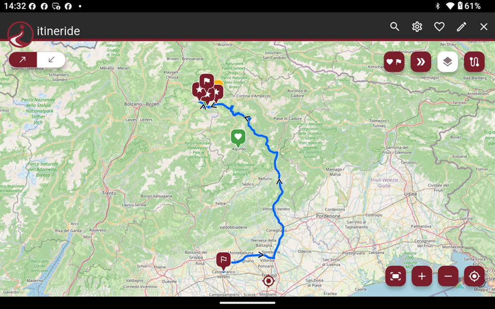
itineride es el planificador de itinerarios pensado para quien va en moto. Toca el mapa para poner una etapa, mira la ruta dibujarse, y llévate contigo la distancia, el tiempo de conducción y las notas de cada jornada — en el teléfono que llevas en el bolsillo y en la tablet apoyada en la mesa.
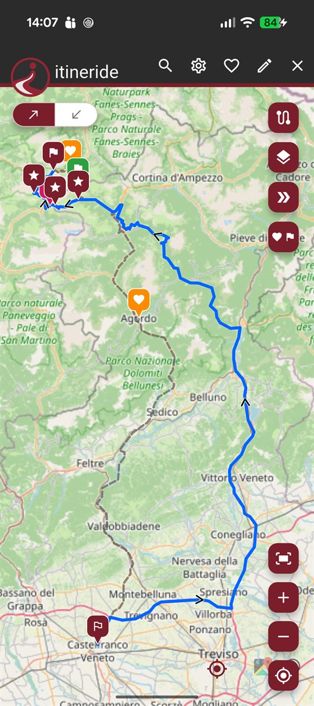
Nada que configurar antes de empezar: abre el mapa, y el primer toque ya es una etapa.
Toca el mapa, busca un lugar o pega unas coordenadas: cada punto se convierte en una etapa. Elige entre solo ida e ida y vuelta — los dos sentidos siguen siendo distintos, cada uno con sus etapas — y marca puertos, refugios y miradores como puntos de interés, sin desviar el itinerario para llegar a ellos.
Cada tramo se calcula por separado y vuelve con distancia, duración, velocidad media e indicaciones de giro. Autopistas y peajes son un interruptor que accionas tramo a tramo: así se eligen las buenas carreteras, y el enlace aburrido sigue siendo un enlace.
El resumen reúne los totales del viaje y los reparte día a día, incluidos los días de descanso. Comparte el itinerario con quien sale contigo, expórtalo en GPX, o entrégaselo a Google Maps la mañana de la salida.
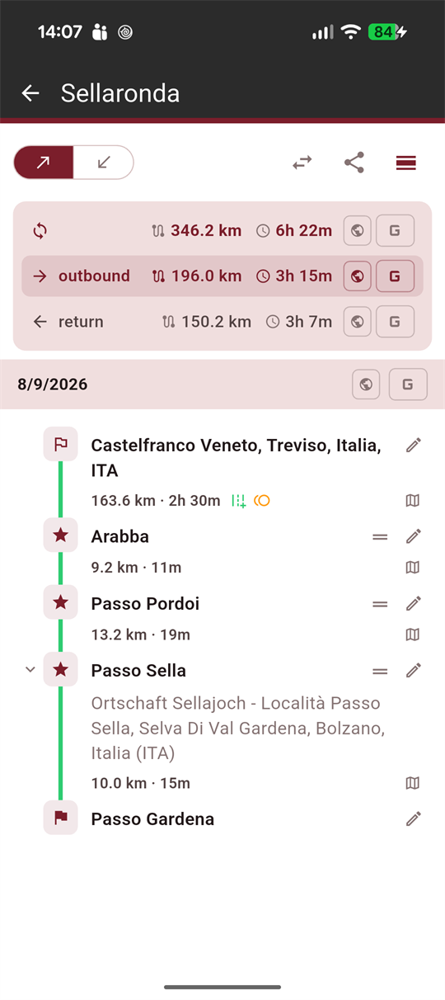
Sin muro de novedades, sin amigos que añadir, sin nube que sincronizar. Un planificador que se abre rápido y guarda lo que escribiste.
Un toque en el mapa, una búsqueda por nombre, o unas coordenadas pegadas del mensaje de un foro. Las tres acaban en el mismo sitio: una etapa en tu ruta.
Elige ida y vuelta y la vuelta se convierte en un sentido propio, con sus etapas y sus carreteras. Volver a casa nunca tiene que rehacer el camino de ida.
Un puerto de montaña, un refugio, un mirador que quieres recordar: márcalo a lo largo del camino. Aparece en el mapa sin mover un metro de ruta.
Los lugares a los que vuelves quedan a un toque, listos para entrar en el próximo viaje que empieces.
Dos interruptores en cada tramo. Vuela por la autopista para llegar a la montaña, y luego deja los puertos sin ella.
Los totales se reparten entre las jornadas en las que de verdad vas a rodar: una semana fuera deja de ser un único número largo.
Exporta una ruta o el viaje entero — notas, enlaces, tipos de etapa y días de descanso incluidos — y abre el GPX que alguien ha compartido contigo.
Un archivo local: sin cuenta, sin registro, sin ningún servidor nuestro en medio. Nada que borrar después, porque nunca se envió nada.
Kilómetros o millas, y toda la aplicación — indicaciones de giro y nombres de lugares incluidos — en español, italiano, inglés, francés o alemán.
La disposición sigue a la pantalla en vez de estirarse para llenarla. En el teléfono el mapa ocupa toda la pantalla y el viaje se abre encima. En una tablet la lista y los sentidos van uno al lado del otro: tocas una etapa a la izquierda y ves los totales cambiar a la derecha.
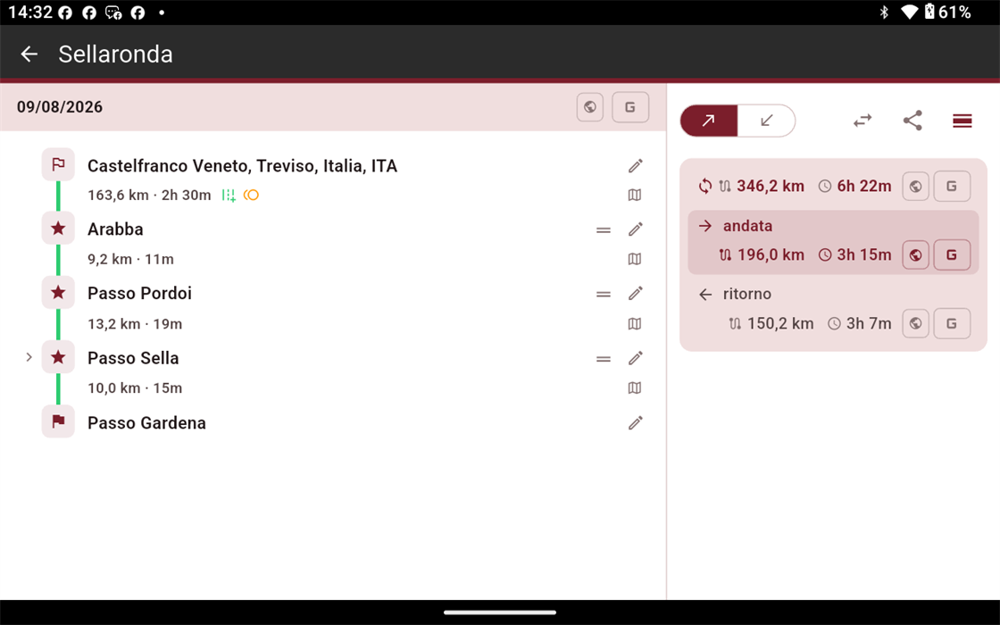
Tablet — las etapas y sus sentidos, uno al lado del otro (aquí en italiano, uno de los cinco)
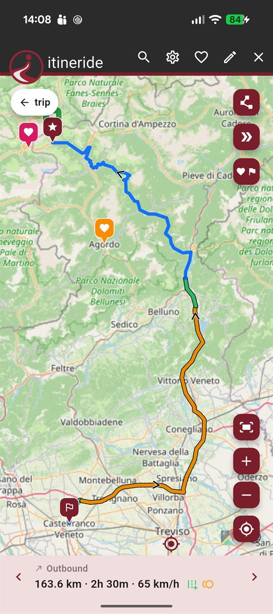
Teléfono — un tramo cada vez
Más mapa, los mismos controles a mano
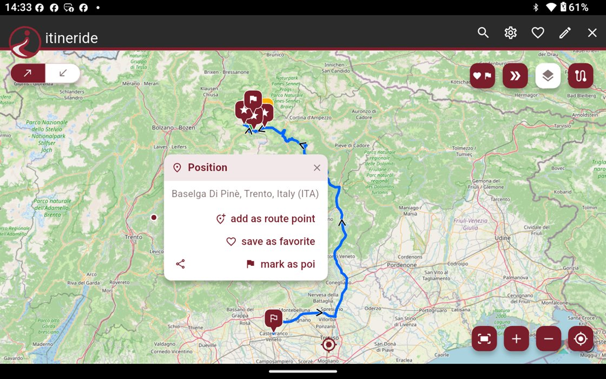
Cualquier punto del mapa está a un toque de ser una etapa
Capturas reales, nada recreado. Arrastra a los lados.
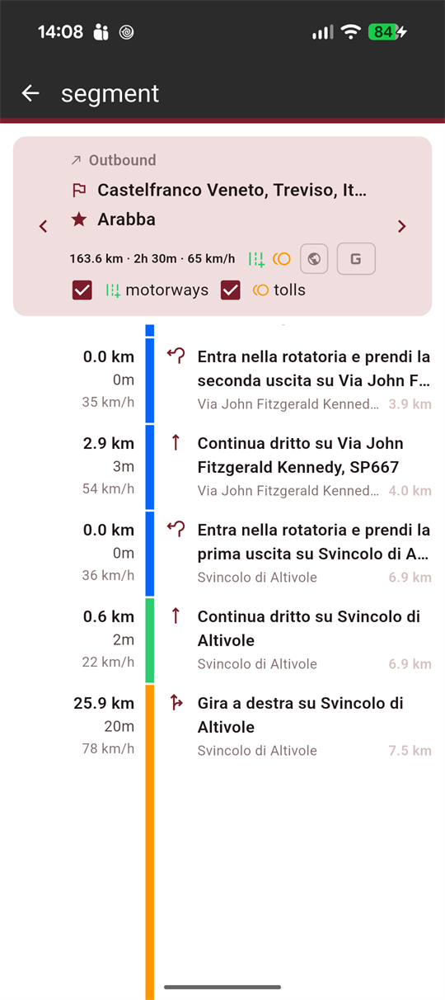
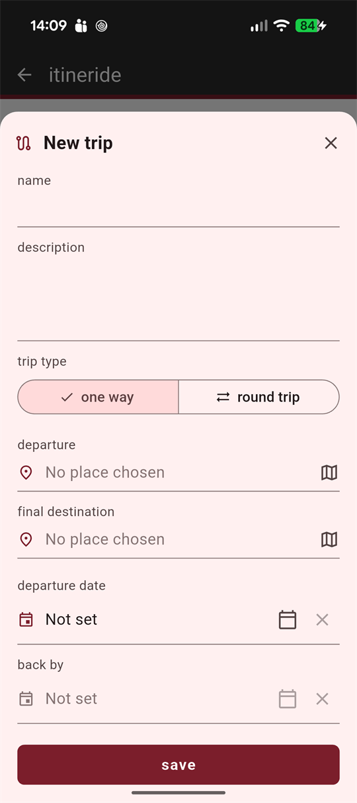
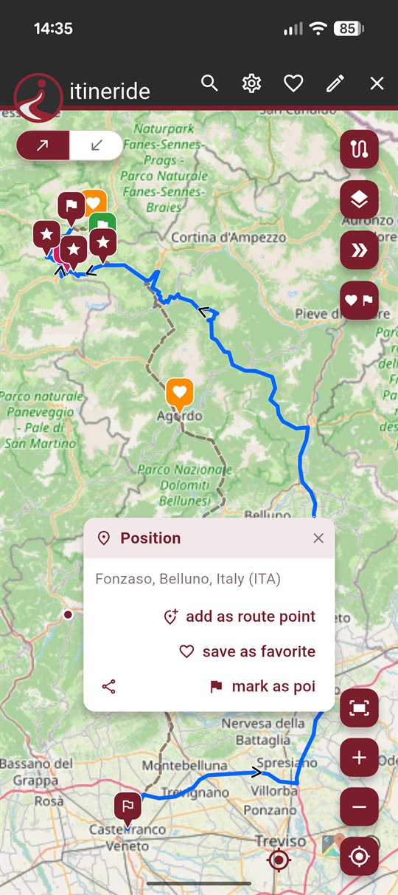
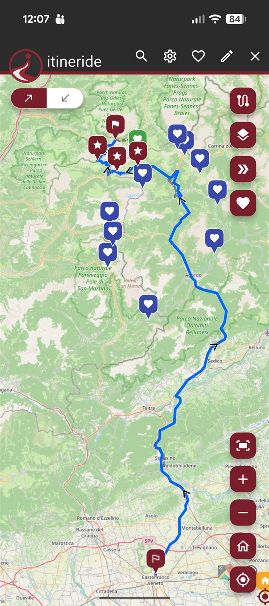
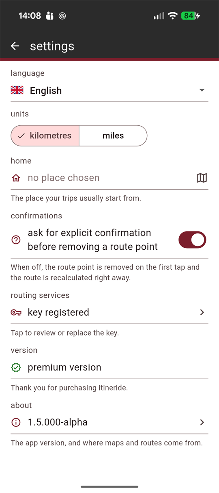
La aplicación gratuita no caduca y nunca pide una tarjeta. El premium se compra una vez, y ahí se acaba.
Sin caducidad, sin cuenta, sin tarjeta.
Se compra una vez. Sin suscripción, sin renovación.
itineride planifica, no navega: en carretera el itinerario se entrega a Google Maps. Las rutas se calculan con OpenRouteService y, en el primer arranque, la aplicación te pide tu clave personal de ese servicio — es gratuita y se obtiene en unos minutos desde su web. Es también el motivo por el que aquí no hace falta ninguna cuenta: los cálculos pasan por tu clave, no por nuestros servidores.
Ábrelo, pon la primera etapa, y mira adónde quiere ir la carretera.
Disponible enGoogle Play